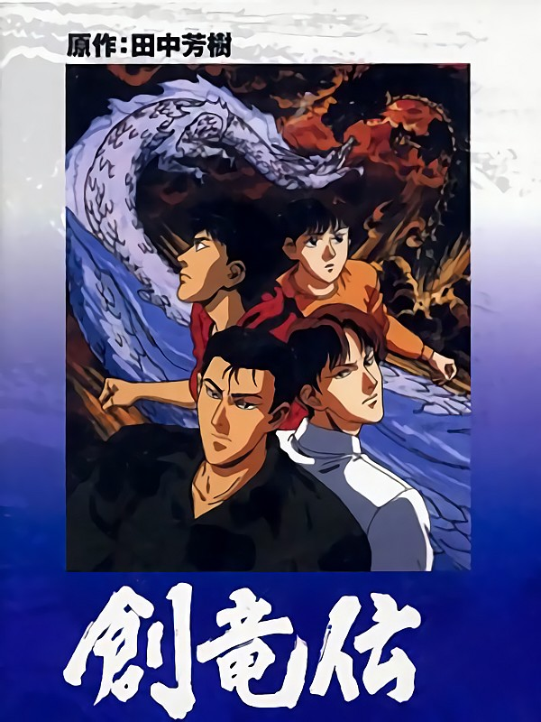

Sohryuden

Episode 1 : | |
Episode 2 : | |
Episode 3 : | |
Episode 4 : | |
Episode 5 : | |
Episode 6 : | |
Episode 7 : | |
Episode 8 : | |
12 OAV de 45 min, 1991.
Aussi connue sous les titres de Legend of the Dragon Kings, Legend of the Four Kings, Sohryuuden, Souryuuden.
Les frères Ryudo semblent mener une vie normale dans leur grande maison.
Mais ils gardent un secret millénaire : leurs ancêtres étaient des dragons, et les immenses pouvoirs de ces aïeux légendaires pourraient bien se réveiller, sous l'impulsion d'une mystérieuse organisation qui ne recule devant rien pour les manipuler.
Adaptée très librement du manga, notamment au niveau du design des personnages, Sohryuden est une série plus proche des années 80 que 90, à prendre impérativement au second degré de par son exagération qui touche parfois au gore, mais qui reste un bon divertissement.
Téléchargements et streaming
Sur serveur :Episode 1 : | |
Episode 2 : | |
Episode 3 : | |
Episode 4 : | |
Episode 5 : | |
Episode 6 : | |
Episode 7 : | |
Episode 8 : | |